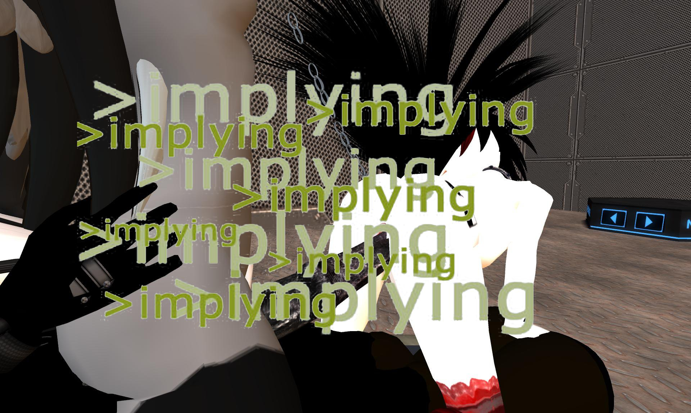

The Pisces / an excerpt

The Pisces
For Elaine Kahn
I leave my friends behind, at their houses and at their bars.
An astrological tweet that morning predicted:
Pisces – An act of courage tonight will bring
months of emotional excitement
for which you are not prepared.
So I walked down the block and to the left
with the cordial self-assuredness
of those who never had any troubles
under this moon rain drops blister like neons
stepping down town in this tiny metropolis
drunken with literature where stories
begin among other stories without ever ending
and when a stranger asks your name:
match their bluff, respond in tone, keep the mood going,
it’s an exercise in style, in imitating gestures and voices
be a pastiche of their fantasies, a satire of their cosmology,
Keep this up at least until the nakedness of a third date
If you are talking to a firebrand
tell them you are a firebrand yourself,
and that’s why your royal family sent you abroad,
and that’s why you look like a Corsican shepherd.
When Helen asked where Paris had been hiding until then
They said: when my sister and I were born my mother dreamt
they were birthing a firebrand that would burn the city they sired
and that is why my family sent me away
and that is why I’ve always been hiding
Helen said: don’t you dare hide and come out,
the riches promised you by birthright
they might always be just one more veil away.
Remember what a waste every unseen nakedness is.
See: I have taken so many forms in the fields
I can’t carry them unless you help me make a garland
the crown will go to the one who races the fastest
take my hand and let’s knot our hair together
What is up with your strange tiny hands?
they are smaller than mine, can you even hold a cup
buy me a drink and moisten my lips and I will
kiss that hand, if you will kiss mine then too
Whenever Helen needs effervescent refreshment,
they tell the expert brewer:
“Brew me the best beer ever brewed.”
I wish I had come up with that.
They ask of the sacred band of Thebes
the golden army of 150 pairs of gay lovers
have you ever heard of something so hot and horny
like a fantasy gay antifa, or a communist gay gun club
Could you even imagine an army of lovers
to let a thousand flowers bloom
blinding like the solar golden record
their sacred band, their shining shields
the harvest is soon upon us
summer is a lightning bolt
Mao knew it well, they are
all armed and chanting in unison
this is the time of our revenge
this is the time of our revenge
Could you even imagine an army of lovers
with the one who always hid their face
as their shoulders shook with laughter
always holding it in their hands
perhaps scared it would fall off
The one who froze all mousy and terrified
to always be the prey and never praying
the one for whom emetophobia was self care
for deep and drawn-out sadness feels like nausea
The one whose body aches and spasms
so violently they throw themselves aground
to cry and moan and fill their mouth
with sawdust and cloth and mites
to clog a thirsting throat, to hold their breath
until their diaphragm rebels and coughs and coughs
Have you noticed that dog, the reactionary white guard
chanting in secret, between the I swear, I swear
one more time, one more chance
this is the time we are going to change
this is the time we are going to change
And, if the kingdom is of the meek, they can take a city
have you looked up at the sky yet, still copper-lit
from the lingering flames of the oldest earthly city
filled with regret, their heart bestially aching in the world
The old turning their face, leaning against the walls in ruin
as a busboy cleans the empty tables and the empty chairs
spilled with the overturned cups of tomorrow’s laughter

an excerpt from The Eminent Lives of Patrons, Artists, and Whores
4.
I’ve noticed that a quarter past eleven is the only time at which a day ever truly starts
To say on a Monday morning that you have secured the bag, criminal activity must be involved
Only after committing my first felony in the United States, I got the courage to wear jewelry
It wasn’t my very first, at 13 I stole a motorbike and took it apart in an uncomfortable garage
The absence of judgment and time’s forgetfulness absolve my conscience always already silent
Can’t become US citizens: drug users, sex workers, communists, and anyone of moral turpitude
You sad cops and weepy bureaucrats just couldn’t have stayed in your father’s womb
At Larry Flynt’s a girl waits for her boyfriend to leave and ask me: are you here for work or fun?
Dance, save money, hire a boudoir photographer, and when you can get ads, ads are important
At Dixie Divas theyed enter with dogs, and read aloud the girl’s names as they identified them
Asked what I do for a living, this time I say: I bring together very rich people and entertainers
Like for Coachella? No, you could say more like for Coachella adjacent events
Strung along a cute DEA investigator, talking of my dark secret as if I were a comic book hero
What would you have done commissioner, if you ever found out who my friends were
Married to the carceral you would have knocked on our doors with your bejeweled fist
Elsewhere after Branko, S*** says I never liked Xanax until I started to fear they’ll take my wife
A man screams in the street as a crowd gathers around him, come we’ll send you home
And Baal, dark and so lovely, a beast at the heart of the world cries back Where?
ANTON IVANOV grew up between Italy and Bulgaria. His work has appeared in Wonder, Blush, Triangle House. He runs a monthly reading series in New York with Rachel Rabbit White, called Ceremony.